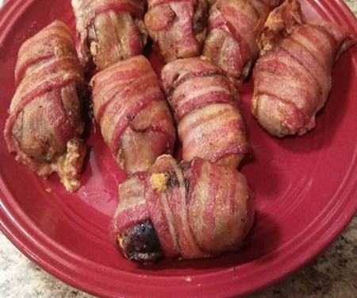

🍽️ Outdoor Cooking
More Than a Recipe
Why sharing wild game meals with family and friends can be just as rewarding as the hunt itself.
Read Article →Hunting stories, fishing trips, wild game recipes, and lessons learned outdoors.
Stories from the blind, recipes from the kitchen, fishing memories, and practical outdoor knowledge from Jason Dickson's Outdoor Adventures.

Why sharing wild game meals with family and friends can be just as rewarding as the hunt itself.
Read Featured Story →Why sharing wild game meals with family and friends can be just as rewarding as the hunt itself.
Read Article →
A cold December lake hunt, working jerk lines, gadwalls overhead, and one unbelievable shotgun malfunction.
Read Story →
A light, fresh striped bass recipe with tomatoes, basil, garlic, and lemon.
Read Recipe →
A low and slow smoked goose recipe with a flavorful dry rub, juicy meat, and crisp skin.
Read Recipe →
A cold January morning, frozen water, teal, bluebills, geese, mallards, and memories from the blind.
Read Story →
A Louisiana offshore fishing trip with good friends, deep water rigs, and hard fighting yellowfin tuna.
Read Story →
Practical advice on wind, scent, scouting, shot selection, patience, and the small details that help new deer hunters succeed.
Read Guide →